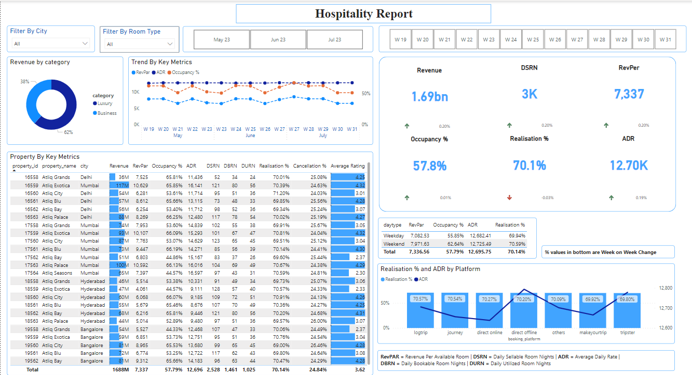
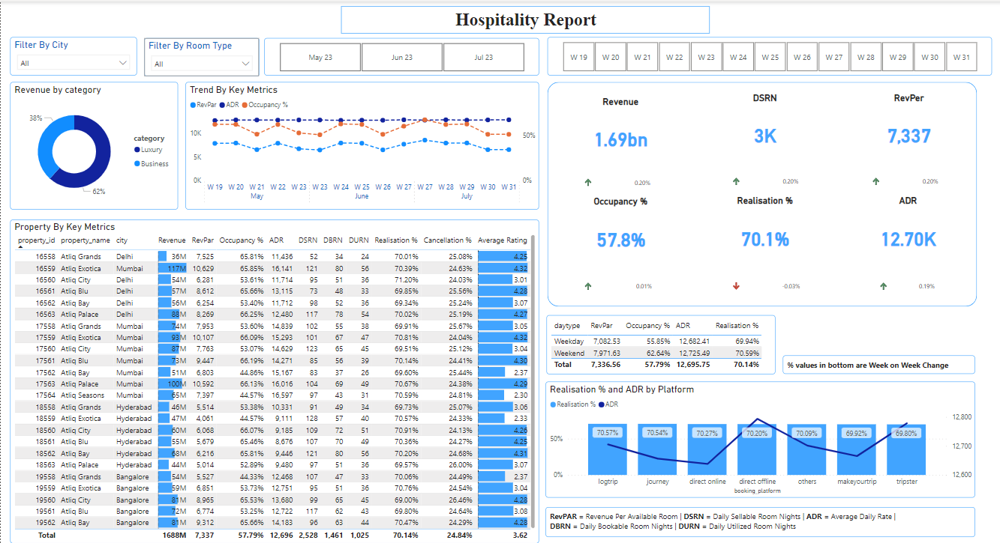

Currently working as Support Executive at Tata Consultancy Service Ltd.
Education
St.Joseph Engineering College
Graduated | BE, Computer Science
Programming languages such as Java, Python.
Learned about machine learning
algorithms, other applications of
AI, and the fundamentals
of
cybersecurity, including network security, cryptography, and ethical hacking.
Basics of cloud computing and different types of
service model & provider
Karnataka Polytechnic (Govt.) Mangalore
Computer Science
Programming languages such as Java,C,C++.
Database management systems, including the design of
database
systems, data models, query
languages, and data normalization.
Networking including network architectures, protocols,
and network security.
Web development technologies including HTML, CSS,
JavaScript and database
connection.
Internship
FullStack Development |
Learned how to work with various web technologies,
including HTML, CSS,
JavaScript, and web
frameworks like Bootstrap, Angular.
how to build and manage databases using SQL and NoSQL
database systems, and how to
work with
server-side programming languages like Python.
learned how to write clean, maintainable code, and
how to use version control
tools like Git to
manage code changes.
Work Experience
Tata Consulatncy Service Ltd. |
Working in SAP CPQ functionality and work includes
Creating and managing quotes
within SAP CPQ, selecting products and services, and generating accurate and
professional-looking quotes
Communicating effectively with end-users to understand
their requirements, provide
updates, and manage expectations regarding issues
Participating in regular team meetings, discussions,
and training sessions to stay
informed about system updates, changes, and upcoming releases.
Utilizing knowledge base articles, documentation, and
internal resources to
identify potential solutions.
Utilizing knowledge base articles, documentation, and internal resources to identify potential
solutions.
Demonstrated ability to write SQL queries to extract,
manipulate, and analyse data
for reporting and decision-making purposes, including creating and maintaining database schemas,
tables, and relationships.
Successfully utilized SSMS for database development
tasks, including creating and
modifying database objects such as tables and views, as well as running SQL queries.
Developed basic reports and dashboards in Power BI and
have hands-on experience
working with Azure Data Factory to create and maintain ETL pipelines. This includes designing
and configuring pipelines, activities, and data flows within Azure Data Factory to orchestrate
the movement and transformation of data. Additionally, I am proficient in connecting Azure SQL
Database with SQL Server Management Studio (SSMS) to efficiently manage and query the database.
Have experience maintaining and monitoring Azure data
pipelines and Talend jobs,
as well as identifying and resolving errors in case the pipelines or jobs encounter issues and
do not run properly.
Have a working knowledge of HQL (Hive Query Language)
and HDFS (Hadoop Distributed
File System). This includes understanding the syntax and usage of HQL for querying data stored
in Hive tables. Additionally, I am familiar with HDFS, which is a distributed file system used
for storing and processing large datasets across a Hadoop cluster.
Projects
Company Sales Data Analysis |
Employed SQL, MySQL Workbench, and Power BI to
perform
comprehensive analysis of company sales data, extracting and transforming raw data into
structured
format using SQL queries and MySQL Workbench.
Utilized advanced data cleaning techniques in Power
BI,
including handling missing values, outliers, and inconsistencies, while creating calculated
columns
with DAX for thorough analysis and segmentation.
Developed measures and utilized Power BI's interactive
features to design visually appealing and user-friendly sales data dashboards.
Hospitality Report Data Analysis |
Loaded data from CSV files into Power BI, leveraging
Power Query for data transformation and cleansing prior to analysis.
Developed key metrics calculations, such as occupancy
rates, revenue per available room (RevPAR), and average length of stay, using DAX.
Created dynamic visualizations and interactive
dashboards
in Power BI, enabling stakeholders to explore and filter data across dimensions like location,
room
type, and booking channel.
 
